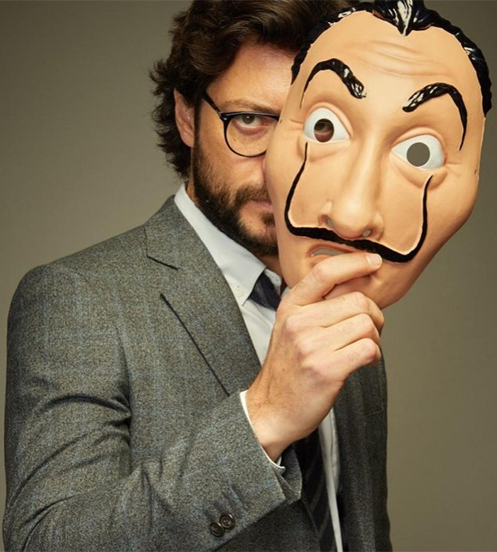

Najdraži lik emisije, profesor prikazuje klasičnu introvertnu ličnost. Na njega se gleda kao na osobu uravnoteženog ponašanja, dalekovidog razmišljanja i snažne odlučnosti. Osim toga, vrlo je organizovan, moralian, smiren i u celini atraktivna ličnost. Predstavlja perfekcionističkog planera i inteligentnog mislioca sa opsesivnom ličnošću (sve na stari način). Iako se često čini da uspešno koristi mnoge tehnike da bi potisnuo svoja osećanja - Osoba je koja ima genijalan IQ, ali vrlo nizak SQ (socijalni koeficijent). Profesor je osoba koja koristi svoje analitičke i logičke veštine za planiranje svakog svog zadatka sa velikim naglaskom na detalje u vezi sa svakim potezom. Imajući vrlo razuman um, pripada grupi donosilaca odluka koje sve svoje odluke zasnivaju isključivo na činjenicama i ne dozvoljavaju da im emocije zamagljuju sud. Ovaj lik negde daje primer „postizanja uspeha odlučnošću, planiranjem i fokusiranim razmišljanjem“.
